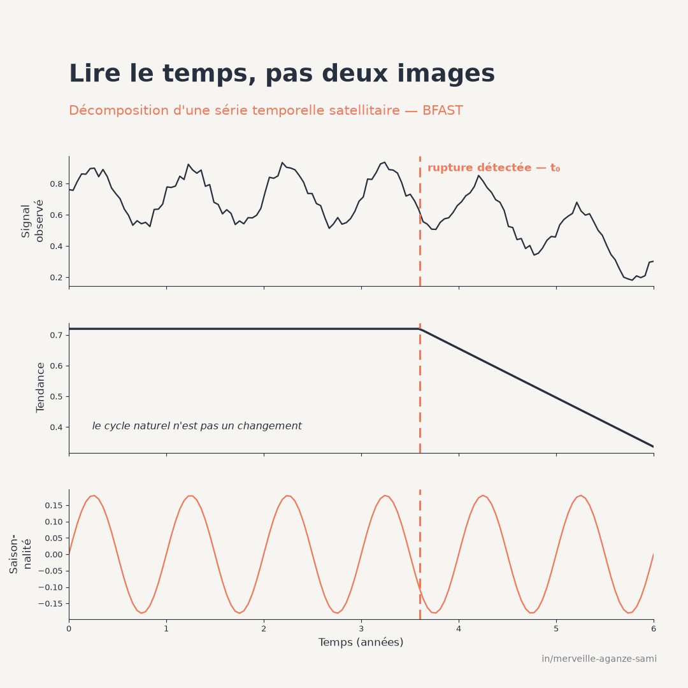

Les archives satellitaires ouvertes fournissent aujourd'hui plusieurs observations par mois sur une même parcelle, avec une profondeur historique de plusieurs décennies. Cette densité d'information contraste avec la pratique courante du suivi environnemental, qui repose souvent sur la comparaison de deux images — une situation de référence et une situation actuelle.
Cette comparaison bi-date présente deux faiblesses symétriques. Elle peut signaler un changement là où il n'y a qu'une différence de phénologie ou de conditions d'acquisition. Et elle peut manquer une dégradation progressive, dont l'amplitude entre deux dates reste inférieure à la variabilité saisonnière ordinaire. Dans les deux cas, l'information sur le moment du changement est perdue.
1. Lire la série plutôt que deux clichés
L'approche consiste à traiter chaque pixel comme une série temporelle à part entière et à en séparer les composantes : une tendance, un cycle saisonnier et un résidu. Cette décomposition, présentée dans l'article consacré à la décomposition saisonnière, constitue le préalable. La détection de rupture s'applique ensuite aux composantes ainsi isolées, et non au signal brut (Verbesselt et al., 2010a).
Le cadre statistique mobilisé est celui de la détection de changements structurels dans un modèle de régression : il s'agit d'identifier les points où les paramètres du modèle cessent d'être stables, et d'en estimer la position ainsi que l'incertitude associée (Bai & Perron, 2003).
Deux natures de rupture. Une rupture sur la composante de tendance traduit un changement du niveau ou de la pente — défrichement, prélèvement de bois, mise en culture. Une rupture sur la composante saisonnière traduit un changement du cycle lui-même — décalage de la période de végétation, modification du régime hydrique. Ces deux signaux n'ont pas la même signification écologique et méritent d'être distingués dans la restitution (Verbesselt et al., 2010b).
2. Les paramètres à décider
- 1La fréquence saisonnière. Nombre d'observations par cycle annuel. Elle doit correspondre à la structure réelle des acquisitions après masquage, et non à la fréquence théorique du capteur.
- 2La longueur minimale d'un segment. Ce paramètre fixe la durée en deçà de laquelle une variation n'est pas considérée comme une rupture. Il arbitre directement entre sensibilité et robustesse : une valeur faible détecte davantage de ruptures, dont une part croissante de faux positifs.
- 3Le nombre maximal de ruptures. Il borne la complexité du modèle. Une valeur élevée permet de suivre une succession d'événements ; elle augmente en contrepartie le risque de segmenter du bruit.
- 4L'ordre du terme saisonnier. Il détermine la finesse du cycle modélisé. Un ordre trop élevé absorbe une partie du signal de changement dans la composante saisonnière.
3. La variante de surveillance continue
Une formulation distincte répond à un besoin opérationnel différent : détecter une rupture au fil de l'eau plutôt qu'a posteriori. Elle repose sur la définition d'une période historique jugée stable, sur laquelle un modèle est ajusté, puis sur la surveillance des observations nouvelles : lorsque celles-ci s'écartent durablement de ce que le modèle prédit, une alerte est émise (Verbesselt et al., 2012).
Cette approche transforme le suivi en dispositif d'alerte. Elle impose toutefois une condition exigeante : la période historique doit être effectivement exempte de rupture. Une dégradation déjà engagée dans l'historique sera intégrée au modèle de référence et ne sera jamais signalée.
4. Réduire les fausses alertes
- Variabilité climatique interannuelle. Une saison particulièrement sèche produit un écart au modèle qui n'est pas une dégradation. Comparer le comportement d'un pixel à celui de son voisinage immédiat, plutôt qu'à son seul historique, réduit sensiblement ce type de faux positif (Hamunyela et al., 2016).
- Lacunes d'observation. Une couverture nuageuse prolongée réduit le nombre d'observations disponibles et retarde la détection. Le nombre d'observations valides par pixel devrait être cartographié en accompagnement des résultats.
- Changement de capteur. Une transition instrumentale non harmonisée sera lue comme une rupture, à une date identique sur l'ensemble du territoire — signature reconnaissable qui doit conduire à revoir le prétraitement.
- Validation par échantillon. Une carte de ruptures doit être validée sur un échantillon de référence indépendant, avec estimation des taux d'omission et de commission. Sans cette étape, ni la surface affectée ni la date moyenne ne sont interprétables.
- Rupture détectée n'est pas cause identifiée. La méthode date un changement de comportement du signal ; elle n'en indique pas la cause. L'attribution à une activité précise relève d'une vérification distincte, sur imagerie à très haute résolution ou sur le terrain.
5. Ce que la méthode apporte au suivi
L'apport principal réside dans la datation. Connaître le moment d'un basculement permet de le rapprocher d'événements documentés — arrivée d'un opérateur, ouverture d'une piste, épisode climatique, changement de réglementation — et donc de formuler des hypothèses d'attribution vérifiables. Une carte de changement sans date ne le permet pas.
Le second apport concerne la magnitude, qui distingue une dégradation partielle d'une conversion complète. Combinée à la date, elle produit un indicateur exploitable dans la durée : surface affectée par période, avec un niveau d'atteinte, plutôt qu'un simple constat de différence entre deux années.
Points essentiels
- La comparaison de deux dates confond variation saisonnière et changement structurel
- La rupture est estimée sur les composantes décomposées, non sur le signal brut
- Longueur minimale de segment et nombre maximal de ruptures arbitrent sensibilité et robustesse
- La variante de surveillance suppose une période historique réellement stable
- Une carte de ruptures se valide sur échantillon indépendant avant tout usage décisionnel
La valeur d'une archive satellitaire ne tient pas au nombre d'images qu'elle contient, mais à la capacité d'exploiter la continuité temporelle qui les relie. C'est cette continuité qui permet de dater un changement au lieu de simplement le constater.
Références
- Bai, J., & Perron, P. (2003). Computation and analysis of multiple structural change models. Journal of Applied Econometrics, 18(1), 1–22. doi.org/10.1002/jae.659
- Hamunyela, E., Verbesselt, J., & Herold, M. (2016). Using spatial context to improve early detection of deforestation from Landsat time series. Remote Sensing of Environment, 172, 126–138. doi.org/10.1016/j.rse.2015.11.006
- Verbesselt, J., Hyndman, R., Newnham, G., & Culvenor, D. (2010a). Detecting trend and seasonal changes in satellite image time series. Remote Sensing of Environment, 114(1), 106–115. doi.org/10.1016/j.rse.2009.08.014
- Verbesselt, J., Hyndman, R., Zeileis, A., & Culvenor, D. (2010b). Phenological change detection while accounting for abrupt and gradual trends in satellite image time series. Remote Sensing of Environment, 114(12), 2970–2980. doi.org/10.1016/j.rse.2010.08.003
- Verbesselt, J., Zeileis, A., & Herold, M. (2012). Near real-time disturbance detection using satellite image time series. Remote Sensing of Environment, 123, 98–108. doi.org/10.1016/j.rse.2012.02.022

Merveille Aganze Sami
Conseillère MEL & Gestion de Bases de Données. Plus de 9 ans d'expérience en suivi-évaluation, SIG et digitalisation auprès d'organisations internationales (GIZ, Enabel) en RD Congo.
Un suivi de dégradation à outiller ?
Prendre contact